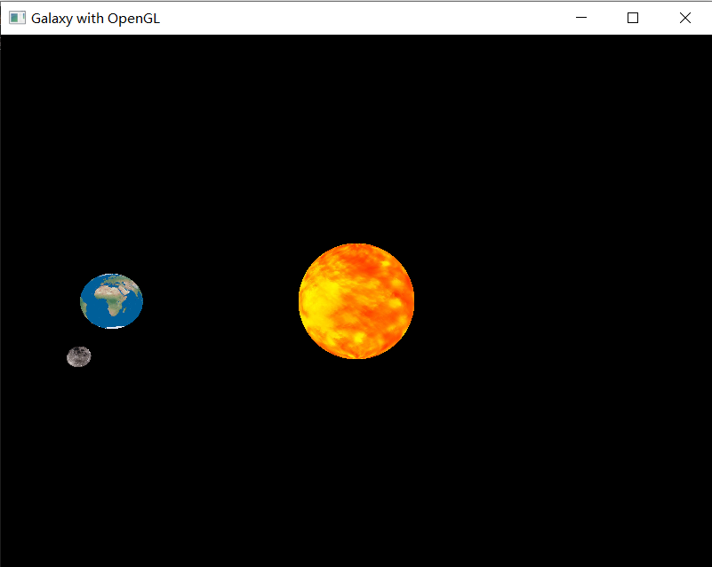

OpenGL入门 矩阵堆栈实现简单行星系统
本文介绍如何使用矩阵堆栈原理实现简单的行星运行系统。
原理
有时我们需要在一个场景中绘制不同的模型，如果这些模型彼此间没有联系，即各模型的位置不会相互影响，那我们只需要单独为每个模型创建合适的变换矩阵，并经过渲染管线将其渲染即可。而对于一个位置会相互影响的系统而言，例如行星运行系统，地球围绕太阳公转，而月球围绕地球公转。处理这样问题的关键在于如何确定各物体变换矩阵，准确来说是模型-视图矩阵。而矩阵堆栈可以很好地将这问题简化。
所谓矩阵堆栈，就一个用来存储变换矩阵的堆栈结构，栈顶矩阵为栈底矩阵乘上另一个矩阵变换而来，由此，栈底到栈顶形成一个逐步复杂的结构。通常来说，栈底的矩阵为视图矩阵，因为对于一个场景中的每个物体，它们都要经过视图矩阵的变换。逐步往上，由父物体的变换矩阵先入栈，利用栈顶矩阵作为该物体的模型-视图矩阵绘制物体后，再进入其子物体的管线，依次逐步进行。同时，对于不希望由父物体继承给子物体的变换矩阵可以在绘制完父物体后将其出栈。
实现
代码实现
对于本文所要研究的行星运行系统，共有三个物体：太阳、地球、月球，它们的依赖关系是：地球围绕太阳公转，而月球围绕地球公转。矩阵堆栈的变换情况如下：
将视图矩阵压入栈中。
1
2vMat = glm::translate(glm::mat4(1.0f), glm::vec3(-cameraX, -cameraY, -cameraZ));
mvStack.push(vMat);构造太阳的模型矩阵，将其与栈顶矩阵相乘后。
将旋转矩阵与栈顶矩阵相乘并入栈以实现太阳的自转效果，将栈顶矩阵作为太阳的模型-视图矩阵，渲染太阳后将栈顶矩阵出栈，移除太阳的旋转变换。
1
2
3
4
5
6
7
8
9
10/// <summary>
/// 绘制太阳
/// </summary>
mMat = glm::translate(glm::mat4(1.0f), glm::vec3(sunLocX, sunLocY, sunLocZ));
mvStack.top() *= mMat;
mvStack.push(mvStack.top());
mvStack.top() *= glm::rotate(glm::mat4(1.0f), (float)currentTime, glm::vec3(0.0f, 1.0f, 0.0f)); // 太阳自转
drawSphere(sunTexture);
mvStack.pop(); // 矩阵堆栈中移除太阳自转将平移矩阵与栈顶矩阵相乘并入栈以实现地球的公转效果，其中平移的坐标的计算利用程序运行时间的三角函数值得到。
将旋转矩阵与缩放矩阵与栈顶矩阵相乘后入栈，实现地球的自转效果并将地球的尺寸缩小，将栈顶矩阵作为地球的模型-视图矩阵，渲染地球后将栈顶矩阵出栈，移除地球的旋转和缩放变换。
1
2
3
4
5
6
7
8
9
10
11/// <summary>
/// 绘制地球
/// </summary>
mvStack.push(mvStack.top());
mvStack.top() *= glm::translate(glm::mat4(1.0f), glm::vec3(sin((float)currentTime) * 4.0f, 0.0f, cos((float)currentTime) * 4.0f)); // 地球公转
mvStack.push(mvStack.top());
mvStack.top() *= glm::rotate(glm::mat4(1.0f), (float)currentTime, glm::vec3(0.0f, 1.0f, 0.0f)); // 地球自转
mvStack.top() *= glm::scale(glm::mat4(1.0f), glm::vec3(0.3f, 0.3f, 0.3f)); // 地球缩放
drawSphere(earthTexture);
mvStack.pop(); // 矩阵堆栈中移除地球自转和缩放与地球类似，将平移矩阵与栈顶矩阵相乘并入栈以实现月球的公转效果。由于月球已经没有子物体，因此无需继续创建新的矩阵，只需要在栈顶矩阵的基础上乘以月球的自转和缩放矩阵，渲染完成后，将矩阵堆栈清空。
1
2
3
4
5
6
7
8
9
10/// <summary>
/// 绘制月球
/// </summary>
mvStack.push(mvStack.top());
mvStack.top() *= glm::translate(glm::mat4(1.0f), glm::vec3(0.0f, sin((float)currentTime) * 0.8f, cos((float)currentTime) * 0.8f)); // 月球公转
mvStack.top() *= glm::rotate(glm::mat4(1.0f), (float)currentTime, glm::vec3(0.0f, 0.0f, 1.0f)); // 月球自转
mvStack.top() *= glm::scale(glm::mat4(1.0f), glm::vec3(0.1f, 0.1f, 0.1f)); // 月球缩放
drawSphere(moonTexture);
mvStack.pop(); mvStack.pop(); mvStack.pop(); // 清空矩阵堆栈
运行效果

项目链接
本项目已上传 github 仓库，如果想要查看项目的完整代码，可以自行访问。
 微信
微信 支付宝
支付宝